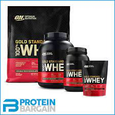

I wanted to analyze data on fitness supplements so I found this data set on kaggle which had a vast variety of types of supplements from protein to BCAA's and all of their ingredients. I cut the data set down because most of the information wasn't helpful as a lot of the ingredients were blends of vitamins and minerals pertaining to one or few brands, which made it difficult to draw general conclusions about it.
Question 1: Do some products have a better bang for their buck?
Question 2: Does the advertised amount of protein have an effect on rating?
In order to check different product's bang for buck we need to establish what bang for buck means in terms of our variables. A good metric for the amount of a product is servings, because when you boil it down the number of servings is the number of times you can "use" a product.
Now the saying bang for buck (BFB) refers to how much money you spend to get a certain amount of something. If you spend a lot of money but get little of something the BFB is low, and when you spend little money but get a lot of something BFB is high, so basically the inverse of price per serving.